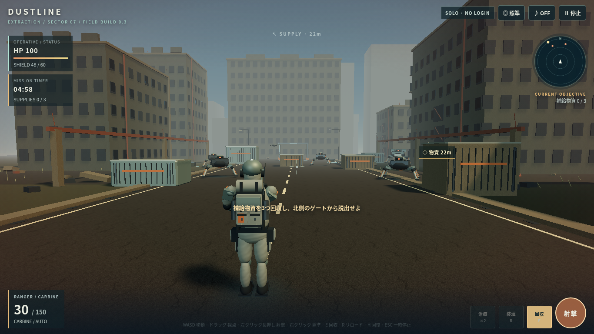
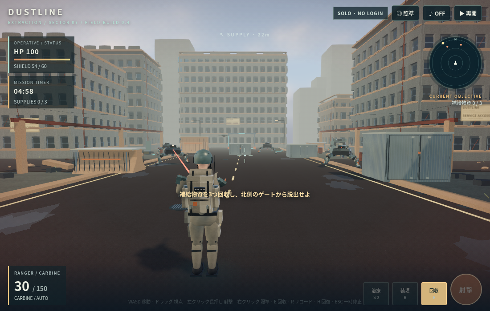
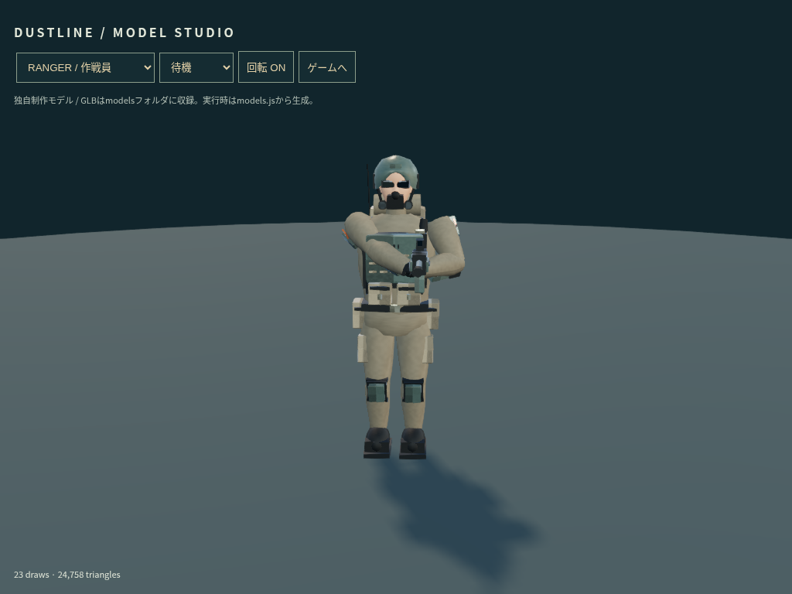
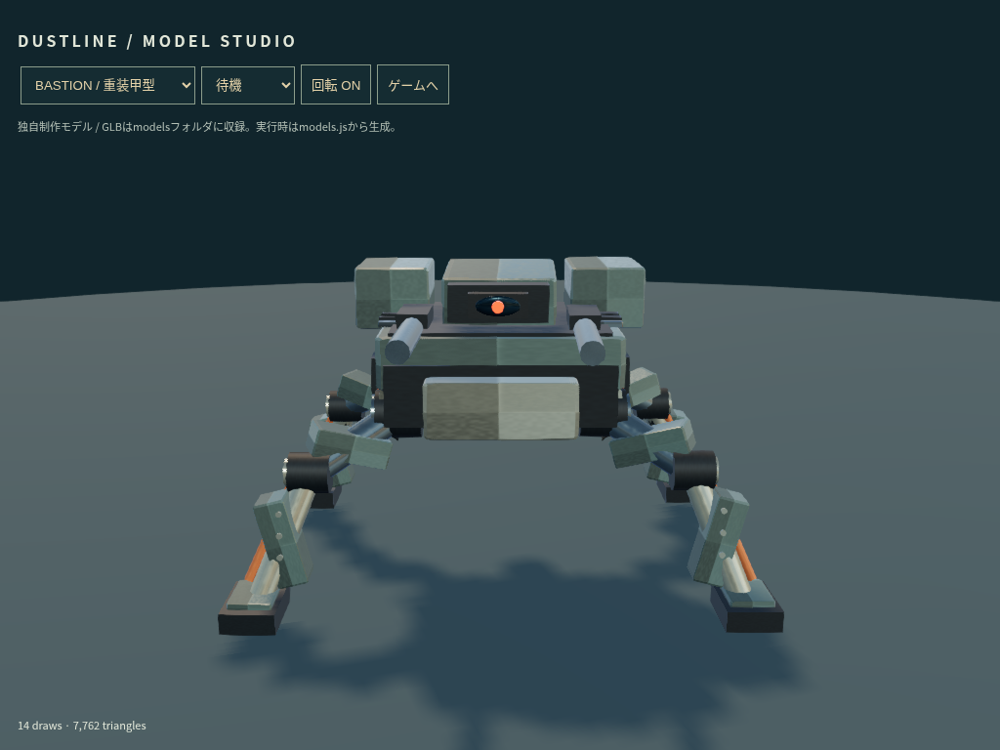

DUSTLINE / v0.4
人物の衣服・装備・人体形状、機械の装甲・駆動部、戦場の素材・窓・配管と照明を改修しました。対象目標はiPhone 13以上・iOS 27.0.1です。
実写相当の完成品質には未到達です。iPhone実機Safari・実機30fpsも未確認です。画像はChromiumのソフトウェアGPUで撮影しています。
ゲームで確認する → モデルスタジオ → 素材クレジット

改修前：v0.3 / 1366×768
改修後：v0.4 / 1100×700 / 標準画質
人物：CC0人体ベースと独自の装備。肌・布の変形は改善途中です。
機械：装甲・軸受・油圧部品・センサーを再構成。画角と撮影条件は完全には一致せず、FPS比較用ではありません。iPhoneでは停止メニューからFPS表示をONにしてプレイ中の値を確認してください。